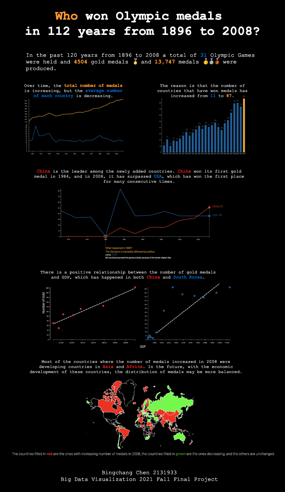

Who
won Olympic medals
in 112 years from 1896 to 2008?
陈柄畅
2131933
Big Data Visualization Final Project
2021 Fall
In the past 120 years from 1896 to 2008
a total of
31
Olympic Games were held
and
4504
gold medals üèÖ
and
13,747
medals ü•áü•àü•â
were produced.
Over time, the number of gold medals is increasing, but the average number of each country is decreasing.
The reason is that the number of countries that have won medals has increased from 11 to 87.
China is the leader among the newly added countries. China won its first gold medal in 1984, and in 2008, it has surpassed USA, which has won the first place for many consecutive times.
There is a positive relationship between the number of gold medals and GDP, which has happened in both China and South Korea.
Most of the countries where the number of medals increased in 2008 were developing countries in
Asia and Africa.
In the future, with the economic development of these countries, the distribution of medals may be more
balanced.
The countries filled in red are the ones with increasing number of medals in 2008, the countries filled in green are the ones decreasing, and the others are unchanged.
